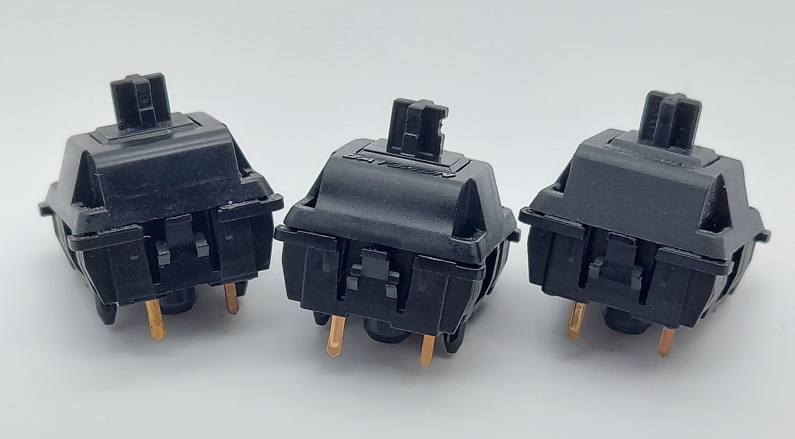

Что касается звука переключателей Oil King, то, к сожалению, это та область, в которой, как мне кажется, Gateron все еще нужно больше всего улучшить, но не так уж и сильно. Хотя ни в одном из переключателей, которые я получил в своей партии, нет ни скрипа, ни писка пружины, непоследовательности в звуке нажатия были гораздо более заметны, чем любые непоследовательности в ощущениях от заводской смазки. В среднем, нажатие этих переключателей, как правило, довольно плоское, средне-высокотональное и с каким-то «шлепающим» тоном по сравнению с чем-то более резким и пластиковым, например, у корпусов из поликарбоната. Однако примерно в 4 из 10 переключателей, которые я пробовал, звук нажатия был немного более приглушенным и немного более низким, чем у других переключателей.
Хотя этот эффект немного уменьшается под колпачками клавиш и в более солидно звучащей клавиатуре, выбор корпусов и колпачков клавиш, которые усиливают звук, определенно сделает эти различия в заводском нажатии более заметными. Что касается нажатия на нижнюю границу, то оно на удивление единообразно, давая плотный, приглушенный и значительно менее заметный звук по сравнению с нажатием на верхнюю границу переключателя.
